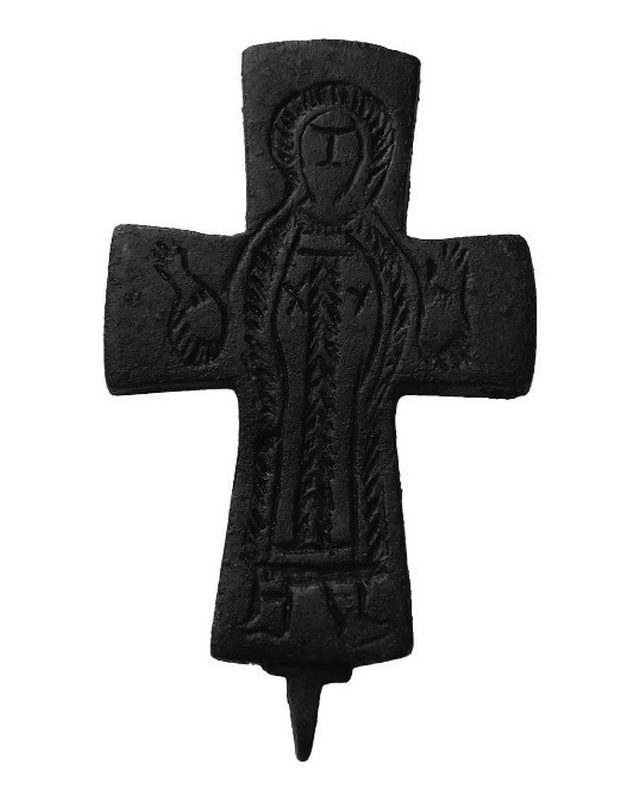

Catalog › CE-0194 · COB2023-1
Valvă de encolpion de bronz din mormânt, capela de la Çobankale, cat. 1
sec. XII (1101–1200) · Çobankale, Altınova, provincia Yalova, Turcia
single valve of a reliquary cross, bronz; c. XII (1101–1200); found at Çobankale, Altınova, provincia Yalova, Turcia.


Identificare
- Categorie
- Valvă izolată
- Material
- Bronz
- Tehnică
- Gravare (incizie)
- Stare
- Fragmentară
- Dimensiuni
- Î 64 × L 43 × Gr 4 mm
Iconografie
- Avers
- Neidentificat
- Descriere avers
- În centru, un sfânt orant, cu nimb, văzut din față, cu brațele întinse în lături, în haină până la picioare; trăsăturile feței și detaliile veșmântului sunt stilizate, gravate cu linii simple și cruciulițe.
Datare și atribuire
- Datare
- sec. XII (1101–1200)
- Centru
- Necunoscut
- Tipologie
- Pitarakis, tip I
Descoperire
- Localitate
- Çobankale, Altınova
- Regiune
- provincia Yalova
- Țară
- Turcia
- Context
- Necropolă / mormânt
- Anul
- 2020
- Coordonate
- 40.6967° N, 29.5156° E
- Precizia locului
- Doar localitatea
Păstrare și referințe
- Nr. inventar
- M3 (1) (Çobankale 2020-M3)
- Bibliografie
- E. Sayın, S. Seçkin, Çobankale'den Enkolpion Röliker Haçlar / The Encolpion Reliquary Crosses from Çobankale, în „Art-Sanat”, 20 (2023), p. 505–530 [Sayın–Seçkin 2023], cat. nr. 1, p. 523, reprodusă la G. 5 (p. 523). DOI 10.26650/artsanat.2023.20.1278458; acces liber: https://dergipark.org.tr/tr/pub/iuarts/article/1278458
- Figura
- G. 5
- Planșe
- Sayın–Seçkin 2023, p. 523
- Observații
- Datare după Sayın–Seckin: sec. XII, pe baza analizelor cu radiocarbon ale capelei și a analogiilor. Se păstrează o singură valvă; cealaltă nu a fost găsită, iar balamaua din capătul de jos a brațului e întreagă, în timp ce cheia de sus și inelul de suspendare s-au rupt. Colecția de păstrare nu e indicată în sursă. Locul: mormânt din capela de la Çobankale (Altınova, Yalova), săpătura 2020. Sursa nu identifică sfântul. Coordonate: ale orașului Altınova, aproximativ (Çobankale e la cca 5 km de Altınova), nu date în sursă.
Citare: Corpus Encolpiorum, CE-0194, Valvă de encolpion de bronz din mormânt, capela de la Çobankale, cat. 1, --root/piese/COB2023-1/ (accesat 2026-10-17).